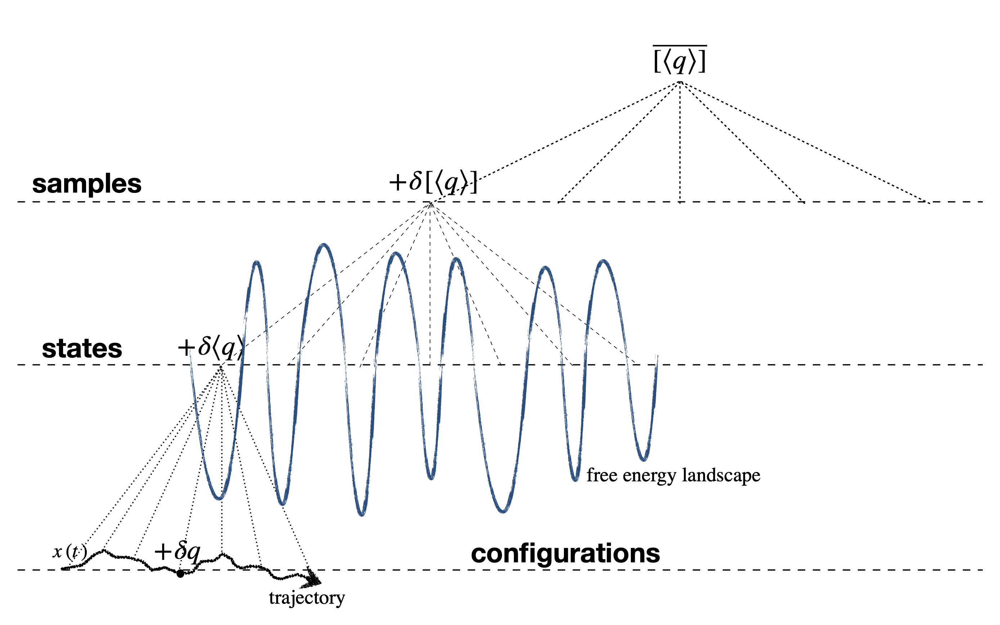

In this project, we focused on understanding the heterogeneous fluctuations in mean-field glass models. By utilizing the replica method and conducting numerical simulations, we examined non-Gaussian fluctuations, particularly those that arise near the glass transition. Our work has provided valuable insights into the connection between these fluctuations and single-particle correlations.
